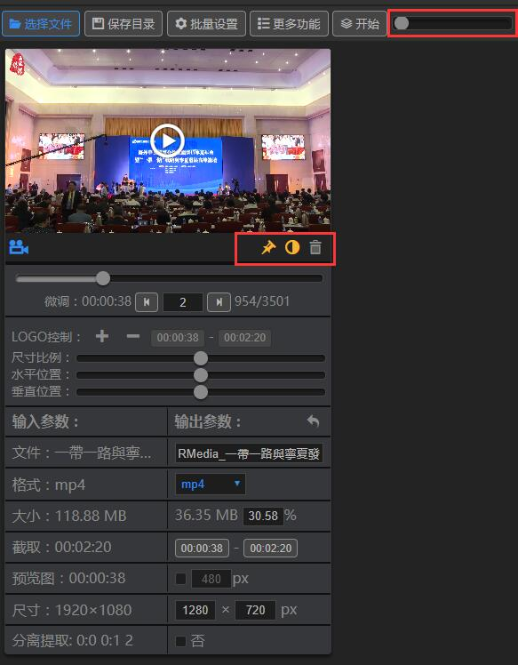
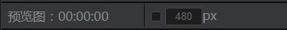
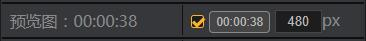
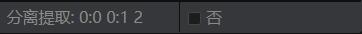
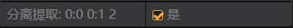
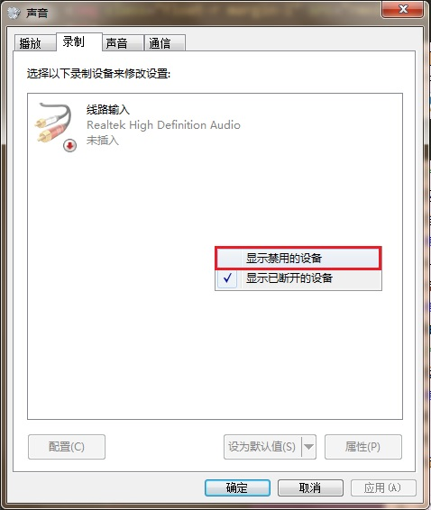
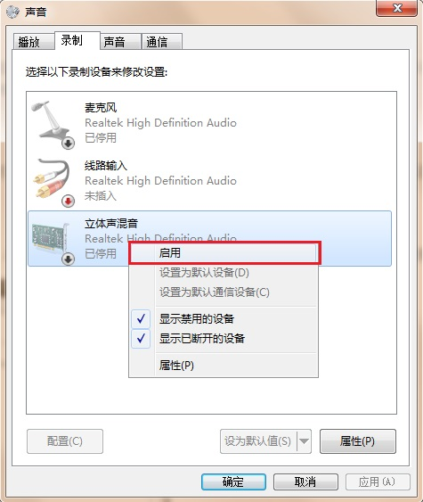
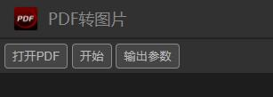

主要流程：
批量输入文件 --> 点击【开始】按钮直接压缩处理。
批量输入文件 --> 点击【开始】按钮直接压缩处理。
设置参数、批量设置（即全局调控）、设置输出目录。默认的输出目录是桌面，需要特别注意覆盖文件行为。

菜单栏的滑杆：控制视图大小。
预览窗口下三个图标按钮：左到右分别是：【锁定/解锁】、【显示/隐藏透明区】、【删除】。这些按钮共同特性是，左击只操作对应文件，右击操作所有文件。
【锁定/解锁】：相当于【选择/反选】，大部分功能只对锁定的文件处理，会忽略解锁状态的文件。
【显示/隐藏透明区】：由于预览窗的比例是16:9的，比例有差异的视频、图片，就会有部分多余空间，默认会显示为透明，关闭透明则以黑色填充。注意：此项仅是为了方便观察，不影响结果。
【删除】：删除视图文件，不影响本地文件。
主要参数：
输出名称：默认会在原名称前加全局命名参数的前缀，如：RMedia_。
输出格式：默认输出mp4。一般情况下拉菜单中可选择的格式都是允许输出的格式，一些除特殊情况除外。
输出大小：这是压缩最关键的参数，默认会自动调整到该视频最适合的压缩率，百分比前的数值即压缩后的预估大小，有3M以内的误差，一般压缩后会比这个值小一些。
输出尺寸：尺寸也是压缩比较关键的参数，全局默认限制在1280x720的范围，一般网络传播用这个值就足够。
主要参数：
时间控制：滑杆滑块取时间位置，下方左右按钮可以微调精确到帧，按钮之间的参数是每点击一次跳多少帧，默认为2帧。
截取：选好时间位置后，点击截取的第一个按钮，即将当前时间设置为起点。再往后选择时间位置，点击第二个按钮即将当前时间设置为终点。
需要注意：当先取的终点小于起点时，起点将自动变小与终点相等，此时，参数是无效的。同样，当起点时间大于终点时间时，终点时间也会自动增大与起点相等，也是无效的。
关闭状态 ==>> 开启状态
 开启后，将同时输出一个缩略图。即，假如需要压缩视频并输出缩略图，只需要勾选此项即同时处理，输出两个文件。
主要参数：
取缩略图的时间位置：操作与音频、视频的截取时间相同。注意的是，只能在截取的时间起点与终点之间取值。
缩略图的宽：可设置宽度，高度自动等比缩放，与视频比例相同。
logo控制面板中，第一行按钮从左到右分别是：【添加logo】、【删除logo】、【设置logo显示的起始时间】、【设置logo显示的终止时间】。设置logo显示的起始/终止时间与截取片段的操作完全一样的，需要注意的是，logo显示的时间段在上方时间控制滑杆的显示颜色是红色区段。
尺寸比例：调节logo与视频的比例。对比例为敏感的童鞋要注意了，在预览窗看到的logo大小不会是输出结果的大小，最好滑动菜单栏后的控制杆放大到视频输出的大小相当进行观察，也可以先输出一小段试看找感觉。
水平位置：这是相对于左边的位置比例。
垂直位置：这是相对于顶部的位置比例。
注意：图片也可以添加logo，包括gif，不同的是，没有时间。
关闭状态 ==>> 开启状态
 如果是视频，并且有声音，它将分离出无声的视频和左、右声道三个文件（如果是单声道即非立体声，则输出一个视频，一个音频）。
如果是音频，并且不是单声道，则它会将左、右声道分离两个文件。
当输入的是图片文件时，序列图选框会自动显示，如果决定输入序列图片转为gif动图，需要满足以下条件：
实际上就是对所有（锁定）文件进行统一调控。部分功能除外。
压缩速度级别：是对压缩时处理的速度设置，越快需要的时间越少，但处理的效果会相对差。从实验中看，实际上各级别的时间差别不大，一般保持默认即可。
宽度、高度上限：规定视频的最大度、最大高度，有时候竖屏的视频可能需要对高度进行修改。本项只对（锁定的）视频有效，对图片等无效。
大小上限：统一让所有锁定的视频都在此范围内。也是只对视频有效。
LOGO面板：与文件参数面板相同，只不过此项是对所有锁定的文件进行控制。
输出名称：当修改并点击确定后，所有锁定的文件的输出名称将被序列化。输入框后的【移动】、【复制】按钮是单独的功能，是为了方便批量重命名（序列化文件名）的。点击即处理，不参与压缩等其他处理。
默认25帧/秒。一般录制做gif可以设置15帧/秒，视频可以24-30。
事实上它就是压缩视频的主要参数。取值最好是2的n次幂，如64、128、256、512、1024、2048...，一般1280x720设1024即可。
一般128k是比通用的立体声音频，如果对音频要求不高，96k即可以满足。对于视频而言，它的大小可以忽略不记。
当选择有声模式时，此项是必选的。通常情况下，电脑默认使用的设备是被禁用的。需要右击电脑右下方的小喇叭，选择录音设备，进入下左图窗口，右击，勾上“显示禁用的设备”。进入下右图，右击需要启用的设备，勾“启用”即可。
 启用之后，回到软件录制面板，点击【扫描录音设备】按钮，可用的设备将罗列在下拉菜单中，选择需要的设备。即可进行下一步。
视频输出时调整宽度到此值，高度等比缩放。
当选择小屏模式时，此项可选。可点击【调整录制区域】按钮，会弹出蓝色选区框，调整它覆盖需要录制的区域，然后键盘【Enter】键确认选区，【Esc】取消并退出选区。
最后点击【开始录制】即进入录制状态，按键盘【F2】完成录制。
进入新的操作界面，有以下按钮如图。
【打开PDF】：是可批量输入处理的。
【开始】：可直接点击开始入进转换状态，会把第一个PDF文档的每一页都单独打印为一张图片。
【参数设置】：弹出参数设置面板。共有两项：
1.渲染比例：决定输出图片的大小，默认是原pdf的2倍。
2.输出质量：质量决定图片的清晰度，当然，这要基于渲染比例的大小，如果输出比例太小，此值无法使图片变清晰。
非常简单，把所有要拼接的图片都打开进来，然后选择排列方式，勾选预览可以看到排列的结果。点击【确定】即输出为png图片。
高级样式：如果懂css样式，也可以完全通过这里来操作布局。
需要多尝试。
未来可能会把文件的视频、音频分离到可视的轨道以编辑。